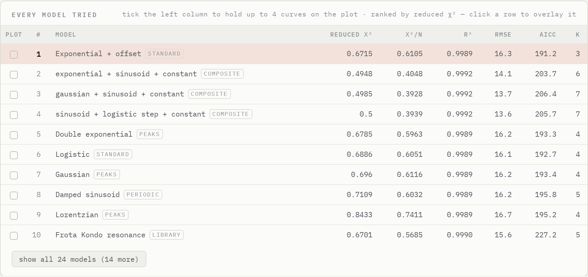
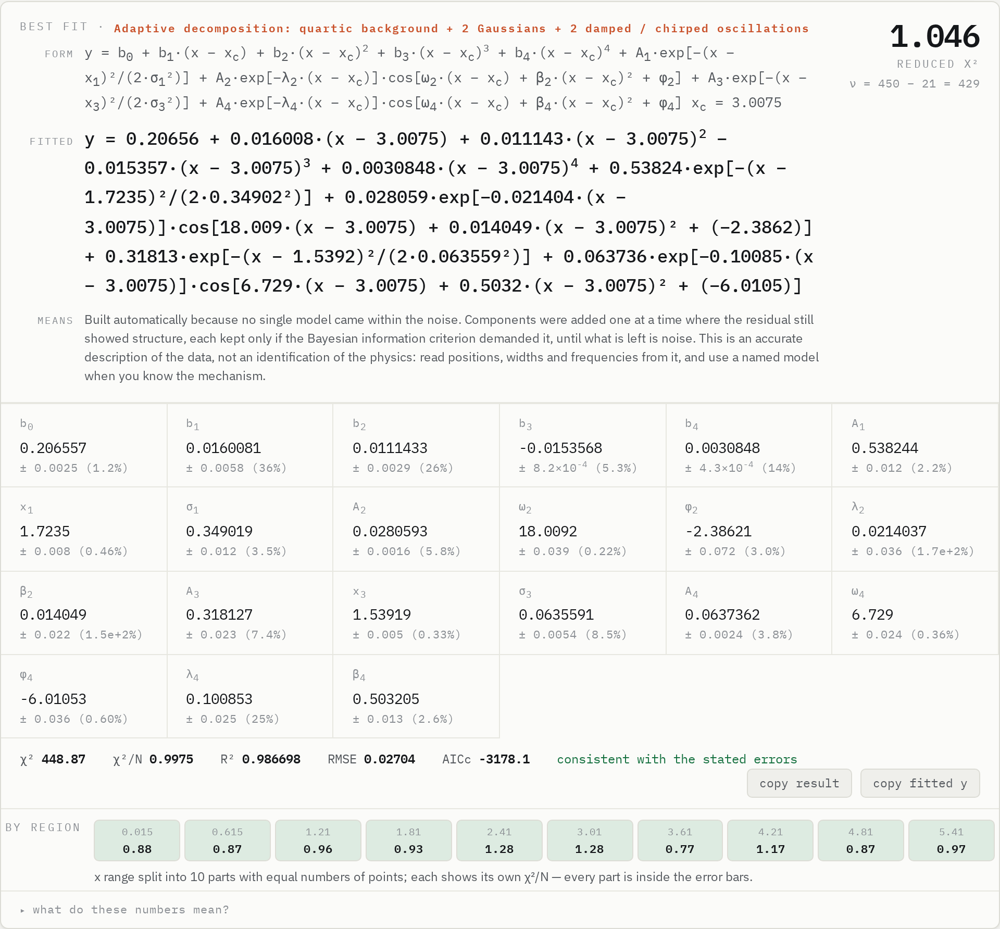
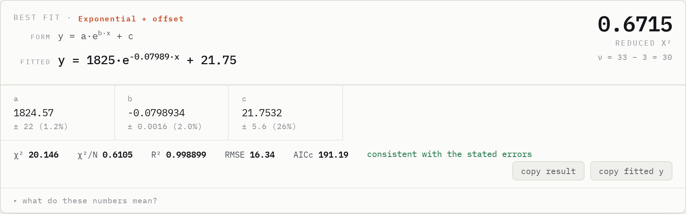
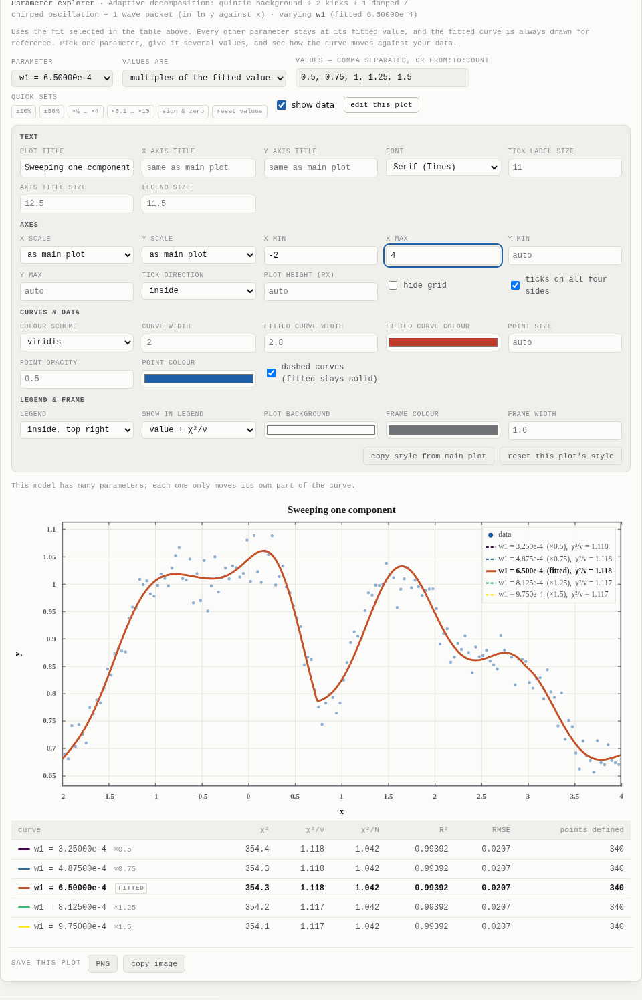
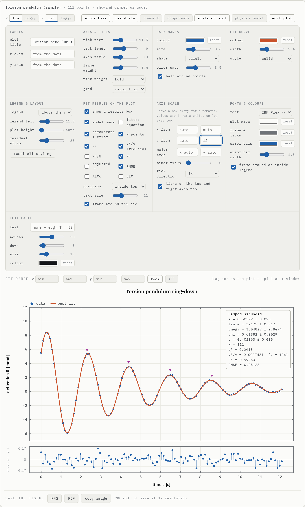

From a CSV to a publishable fit.
Paste two or three columns, press nothing, and read the answer: the best functional form, parameters with uncertainties, χ² and whether the residuals are really noise.
Every family competes, fairly.
Polynomials, power laws, exponentials, peaks, periodic forms, sums of two components, a symbolic dictionary search and the physics library are all fitted with Levenberg–Marquardt in y-space. The ranking charges searched forms for having been picked, and the headline goes to the simplest model the best one does not significantly beat.
- Weighted χ² when σ is given, relative weighting when y spans decades
- BIC, AICc and an F-test parsimony rule
- Outlier rejection with Tukey biweights

A model built from the residual.
When nothing comes within the noise, the bench starts from a polynomial background and adds the component that best explains the largest structure still left — a Gaussian, Lorentzian or Fano band, a step, a kink, a damped or chirped oscillation or a wave packet — refits everything together, and keeps it only if the evidence is strong.
- Components drawn separately on the plot
- Parameters in your own units with error bars
- Explorer and export work on it like any other model

A good χ² can hide a bad region.
The x range is split into up to ten parts with equal numbers of points, each with its own χ²/N or noise-normalised miss, coloured green, orange or red. The runs test flags residuals that arrive in long same-sign stretches — the signature of a missing term.

What does each number really do?
Choose a fitted parameter and give it a list of values — ×0.5 to ×2, a range, or exact numbers. Every other parameter stays at its fitted value, each curve gets its own χ²/ν, and the explorer plot has its own editor: title, fonts, viridis or plasma schemes, dashed curves, limits, ticks and a legend that can carry χ²/ν.

Ready for the paper.
Put χ², χ²/ν, R² and the parameters in a box on the plot, set ranges and tick steps, point ticks inward and mirror them, pick fonts and colours, overlay up to four models or show only the one you selected, then save PNG or PDF at three times screen resolution.

Your lab uses it. Help keep it growing.
Curve Fit Bench is built by two early-career physicists. Licences, sponsorship and custom work pay for new models, verification and support — and keep the bench free for every student who needs it.
Lab licence
Priority model requests, your file formats, email support.
Commercial & OEM
Embed, modify or host the bench in your product or instrument.
Custom models
The model your analysis needs, verified like the rest of the library.
Workshops
A hands-on fitting and statistics session for your department.